Museum Passport, kini hadir di ponsel.
Nikmati perjalanan ke museum dengan pencatatan digital. Dapatkan cap, lencana, dan kartu koleksi.
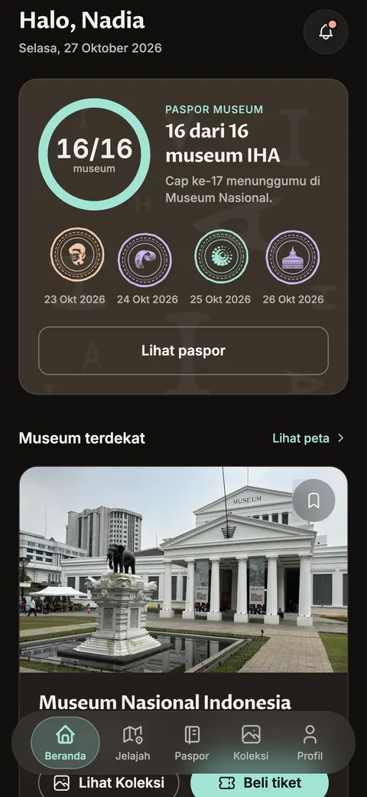
Jalana
Masalah
Museum Passport sudah berjalan. Tapi museum hanya menjual buku fisik. Kunjungan ke museum tidak tercatat.
Jalana juga membuka jalan ke museum yang belum direvitalisasi.
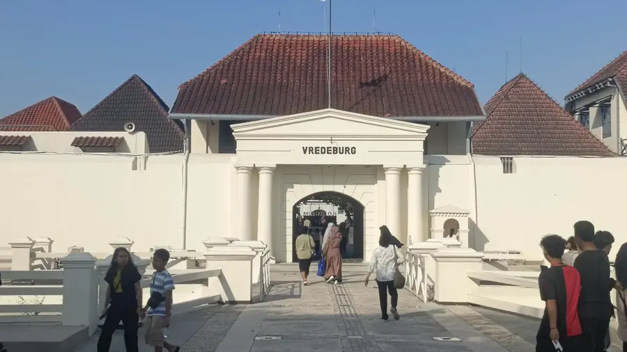
- 5.000
- eksemplar cetakan pertama habis
- 8.000
- eksemplar dicetak ulang
- 4,3 juta
- kunjungan ke museum dan cagar budaya MCB pada 2025
- 16
- museum IHA terdaftar di Jalana
Data koleksi akan tersambung dengan SIMAKO, hanya untuk koleksi yang dipakai Jalana.
Sumber: Kompas, 17 Juni 2026. Antara, 7 Juli 2026. Liputan6, 8 Januari 2026.
Kenapa Jalana
Alasan untuk datang ke museum berikutnya.
Jalana menambah Museum Passport dan tidak menggantikannya. Setiap kunjungan memberi cap, lencana, dan kartu.
Ke museum lain
Setiap museum IHA punya cap, lencana, dan kartu koleksinya sendiri. Paspor baru lengkap setelah pengunjung datang ke museum lain.
Beberapa museum dalam sehari
Tur museum menyusun rute dengan perkiraan jam tiba. Di setiap museum di rute, pengunjung mengumpulkan kartu dan lencana.
Acara di area museum
Beranda menampilkan acara terdekat. Contohnya Hari Sumpah Pemuda di Museum Sumpah Pemuda.
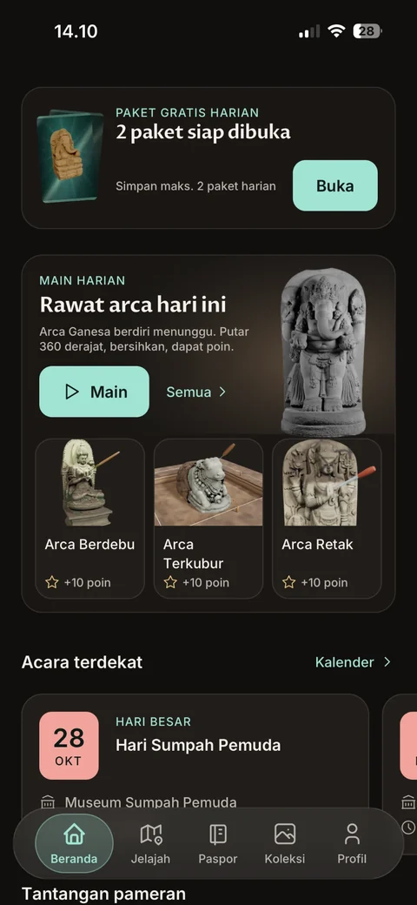
Paspor kertas tetap
IHA tetap menjual buku. Pemilik buku mengecap bukunya di booth Jalana.
16 museum IHA
Satu katalog, dengan satu panel untuk museum.
Aset tetap milik IHA
Kurator IHA meninjau isi sebelum terbit.
Reaksi dari uji konsep
Dari uji konsep: panel simulasi 26 persona dan 10 investor, Oktober 2026. Ini reaksi simulasi, bukan ulasan pengguna.
Bukti permintaan yang nyata ada di atas: 5.000 eksemplar cetakan pertama habis.
Kartu Super Langka berkilau saat ponsel miring. Itu cukup membuat saya mau mampir ke Museum Nasional bila ke Jakarta.
Tur museum menyusun rute beberapa museum dan memberi tahu museum yang tutup. Cocok untuk liburan sekolah ke Jakarta.
Saya mendukung usulan ini, terutama janji pemerataannya. Museum kami ingin ikut uji coba.
Kartu langka adalah hal yang membuat keluarga rela antre.
Saat rilis, saya akan memakainya untuk menyiapkan kunjungan rombongan. Letak koleksi per lantai sangat membantu menyusun rute.
Cap tinta di buku dan cap digital di ponsel, di booth yang sama. Itu video yang paling menarik untuk penonton saya.
Main Harian bisa saya pakai sebagai pembuka sebelum rombongan masuk ruang pamer. Lembar pengetahuannya mencantumkan sumber.
Mematikan fitur berbayar adalah langkah cerdas.
Saya akan memakai Jalana saat rilis. Halaman koleksi menulis lantai dan gedung tempat koleksi itu berada.
Cara kerja
Dari peta sampai paspor.
Jalana menemani pengunjung dari rumah sampai kunjungan berikutnya.
-
Jelajah
Peta interaktif menunjukkan museum terdekatmu dan jam bukanya.
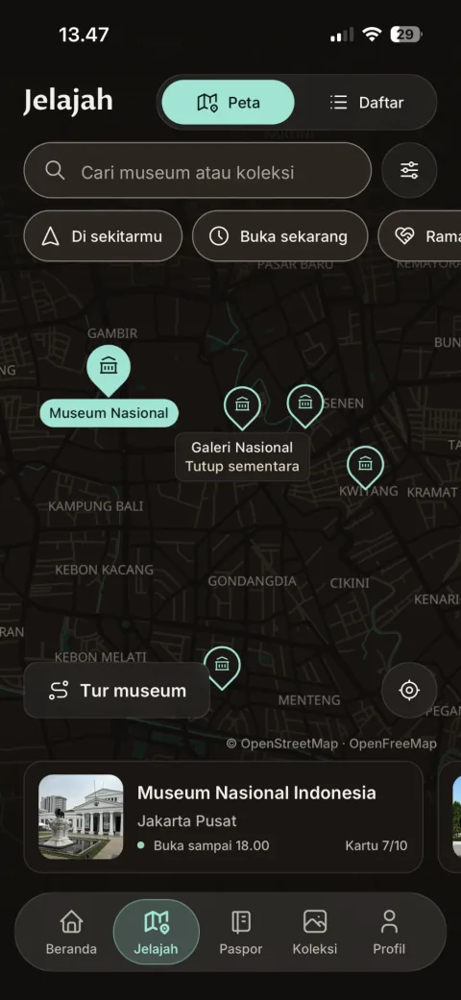
-
Rencanakan
Sedang liburan? Pakai fitur tur museum untuk menyusun rute ke beberapa museum dalam sehari, lengkap dengan perkiraan jam tiba.
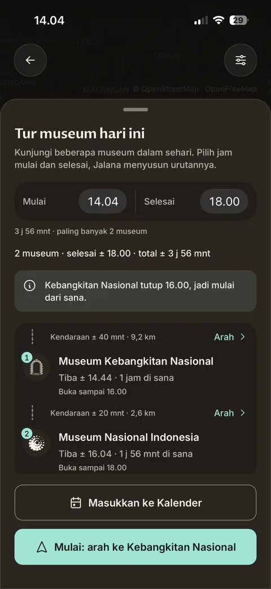
-
Cap dan lencana digital
Saat berkunjung ke museum, Jalana memberimu cap dan lencana untuk ditempel di paspor digitalmu.
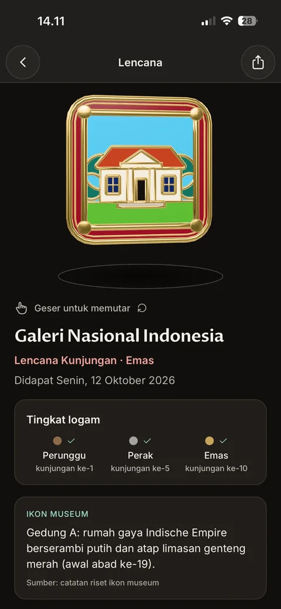
-
Koleksi semuanya
Kumpulkan semua cap, lencana, dan kartu dari kunjungan dan acara di berbagai museum.
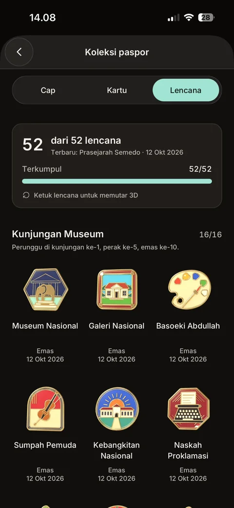
-
Koleksi kartunya
Bawa pulang koleksi dalam bentuk kartu. Tukar dengan sesama pemain.
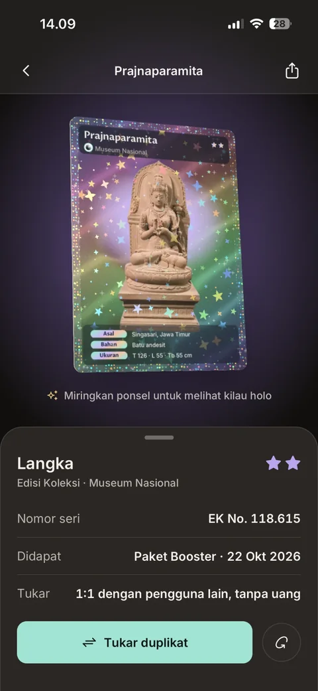
-
Journaling
Tulis dan hias paspormu dari setiap kunjungan ke museum.
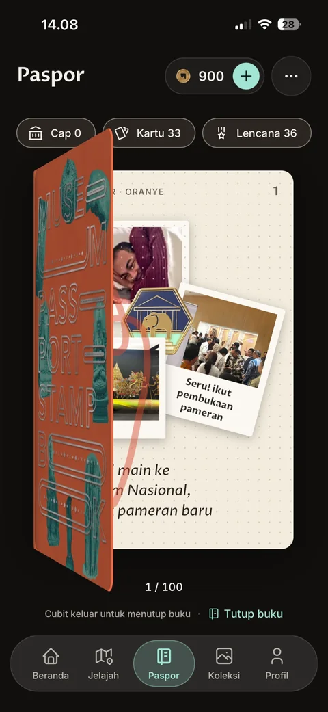
Di museum
Satu booth di pintu masuk.
Booth check-in berdiri tanpa staf, layar, atau listrik. Pemilik Museum Passport juga mengecap bukunya di sini.
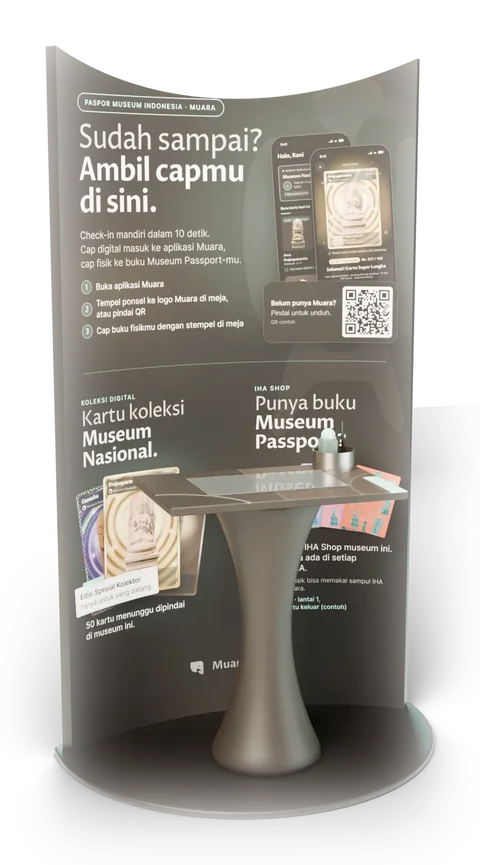
Satu pelat check-in
NFC NTAG 424 DNA dan QR di satu pelat.
Alas baja 20 kg
Anti-terguling dan ramah kursi roda.
Cetakan SEG dua sisi
Diganti tiap musim di rangka yang sama.
Cap fisik
Cap swa-tinta dan pena bertali baja untuk buku paspor.
Di paspor
Kartu, lencana, dan berbagi
Semua yang didapat pengunjung tersimpan di paspor Jalana.
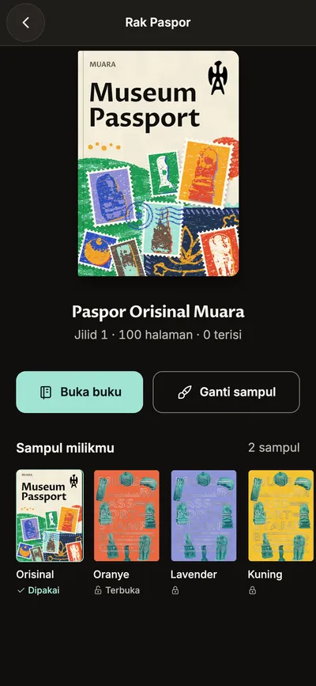
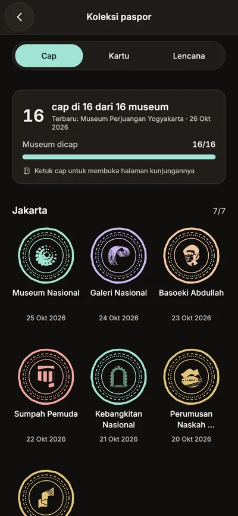
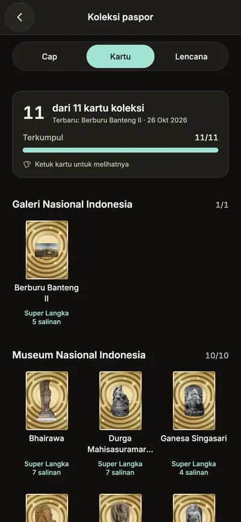
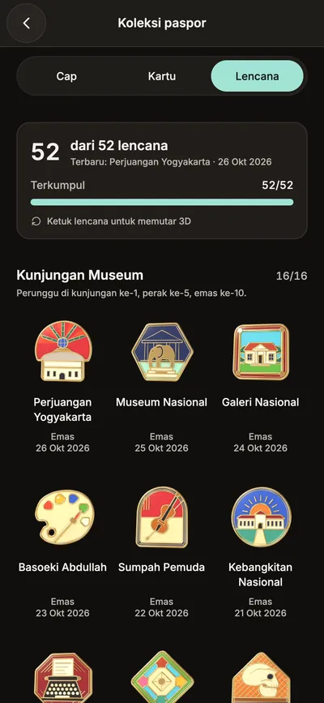
Paspor di ponsel
Sampul paspor tampil utuh. Ketuk atau geser untuk membuka buku.
Sampul paspor tampil utuh. Ketuk atau geser untuk membuka buku.
Rak Paspor menyimpan semua buku dan sampul milik pengguna.
Koleksi paspor menyimpan cap dari setiap museum, dikelompokkan per kota.
Kartu koleksi yang sudah didapat, dikelompokkan per museum.
Lencana kunjungan museum, lencana acara, dan lencana musim.
Kartu koleksi Prajnaparamita dari Museum Nasional, tingkat Langka, dua bintang, Edisi Koleksi. Asal: Singasari, Jawa Timur. Bahan: batu andesit. Ukuran: tinggi 126, lebar 55, tebal 55 cm. Sisi belakang: Museum Passport Indonesia, nomor seri 118.615.
Kartu koleksi
Ini kartu Prajnaparamita dari aplikasi. Muka kartu memuat asal, bahan, dan ukuran koleksi. Sisi belakang memuat nomor seri.
Ada tiga tingkat: Super Langka, Langka, dan Biasa. Super Langka hanya 100 per koleksi per musim.
Pengunjung hanya mendapat kartu Edisi Spesial Kolektor di museum. Tantangan Arca Repatriasi mengajak pengunjung memindai lima koleksi utama di Museum Nasional.
Kartu ini Edisi Koleksi. Nomor serinya acak dan unik untuk setiap salinan.
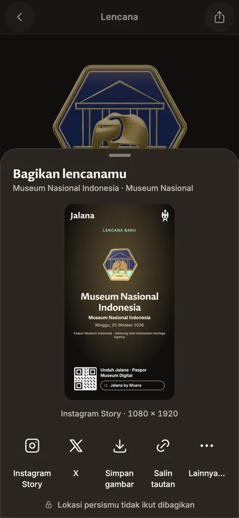
Bagikan
Pengunjung membagikan kartu, lencana, atau cap ke Instagram Story, WhatsApp, dan aplikasi lain.
Gambar yang dibagikan tidak memuat data pribadi atau lokasi.
Tukar kartu ganda
Pengguna 16 tahun ke atas menukar kartu ganda dengan kode 4 digit. Pertukaran ini tidak memakai uang.
Keamanan
Aman untuk anak
Tanpa iklan dan chat
Jalana tidak memuat iklan, chat, atau profil publik.
Profil anak
Anak di bawah 13 tahun bergabung lewat profil yang dikelola orang tua. Tukar kartu hanya untuk 16 tahun ke atas.
Data di ponsel
Halaman paspor, foto, dan memo tetap di ponsel pengguna.
Tanpa pembayaran
Fitur berbayar mati selama uji coba.
Pemerataan
Setiap museum punya lencananya
Foto menarik dan liputan luas baru dimiliki museum yang sudah direvitalisasi. Kartu dan lencana memberi setiap museum IHA alasan untuk didatangi.
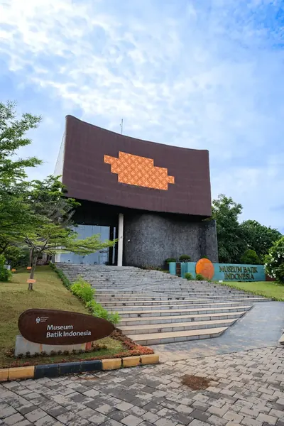
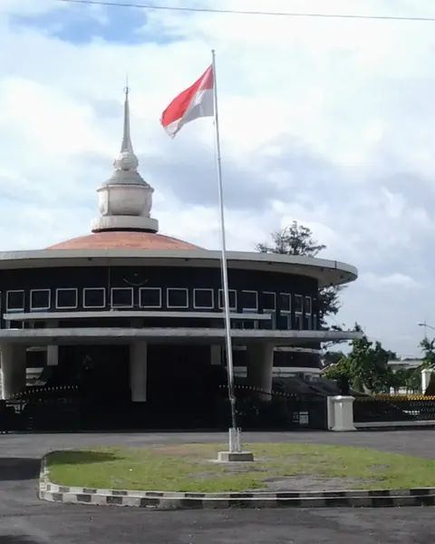
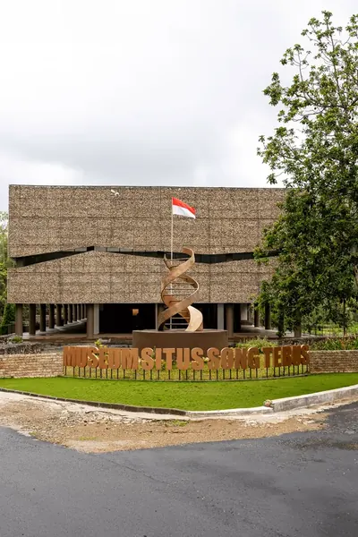
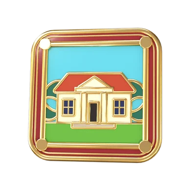
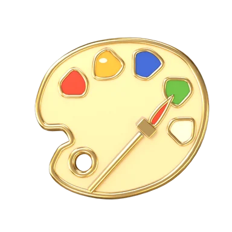
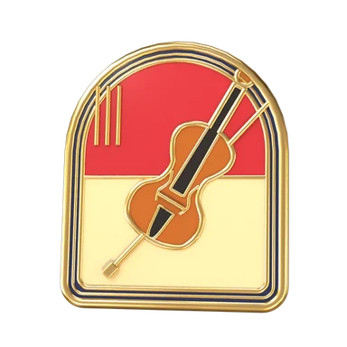
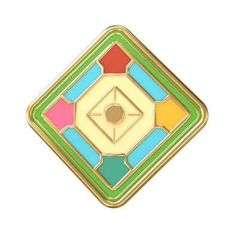
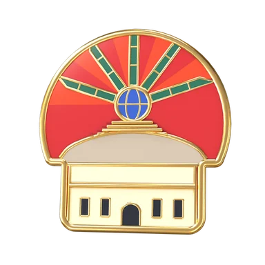
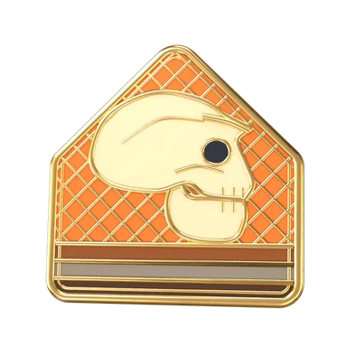
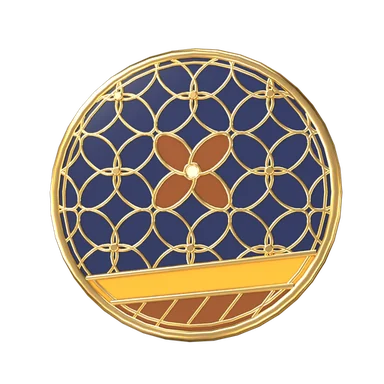
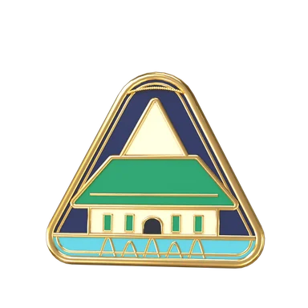
Data kunjungan dari Jalana bisa menjadi dasar ketika museum mengajukan perbaikan fasilitas.
Belajar
Belajar dari mana saja
Untuk siswa dan warga di pulau lain.
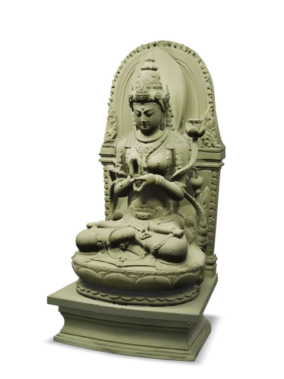
Seret untuk memutar
Putar arca 360° dan perbesar pahatannya, seperti model di samping.
Lihat Prajnaparamita setinggi aslinya, 126 cm, lewat AR di iPhone dan iPad.
Ikuti cerita koleksi, seperti di repatriasi2024.historia.id buatan Muara Studio.
Main Harian: tiga permainan singkat dengan arca yang berbeda setiap hari.
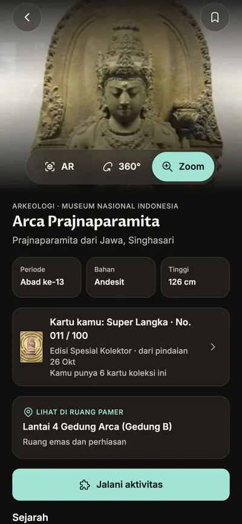
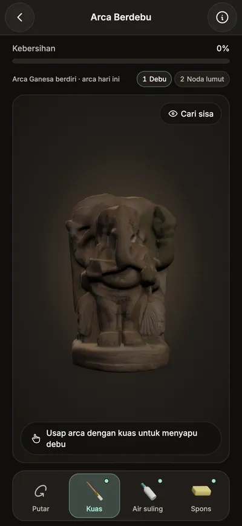
Untuk museum
Museum melihat kunjungannya
Setiap check-in dan setiap pindai label tercatat di panel museum.
Kunjungan dan jangkauan koleksi
Check-in terverifikasi per hari, pengunjung unik, dan kunjungan ulang.
Label dipindai di tempat. Museum melihat koleksi, lantai, dan ruang yang benar-benar didatangi.
Asal pengunjung dan privasi
Museum asal pengunjung, cap yang diberikan, dan label yang dipindai. Ekspor CSV untuk laporan.
Angka kecil tampil sebagai "<10", jadi tidak ada pengunjung yang bisa dikenali. Panel memakai masuk dua faktor dan akses per peran.
Kurator mengubah isi
Kurator mengubah teks koleksi. Perubahan masuk ke draf dulu, lalu diterbitkan.
Museum juga memilih koleksi yang tampil di aplikasi, dan urutannya.
Halaman lain di panel museum
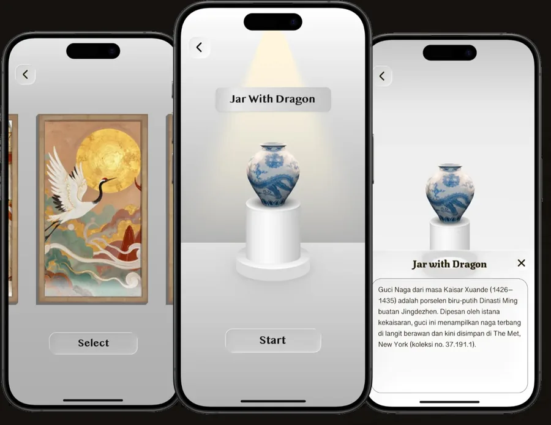
Arcantara
Target rilis awal 2027
Arcantara
EntPoint Studio bersama Muara Studio
Gim restorasi artefak Nusantara untuk ponsel.
Pemain membersihkan dan memulihkan artefak, lalu membuka kisah di baliknya: pilih, pulihkan, temukan, koleksikan, jelajahi.
- Bentuk
- Gim 3D, santai dan edukatif.
- Untuk
- Remaja, SMP dan SMA, semua umur.
- Di luar museum
- Main di rumah, di kelas, atau di pulau lain. Cocok untuk pelajaran Sejarah dan Seni Budaya.
- Di dalam museum
- Usulan Muara: kunjungan yang tercatat di Jalana membuka artefak tertentu di gim.
Visual: EntPoint Studio
Arca repatriasi, 8 objek
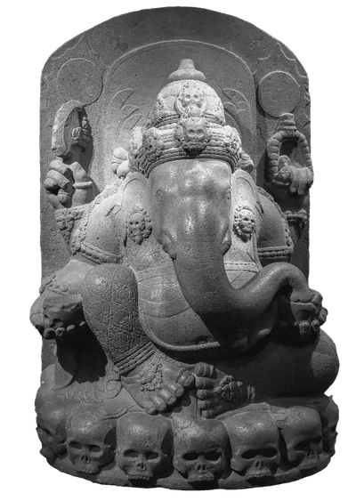
Ganesa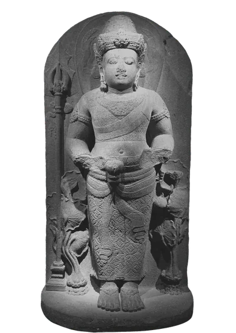
Nandhiswara- Prajnaparamita
- Durga
- Mahakala
- Bhairawa
- Nandi
- Brahma
Koleksi Mahakarya MCB, 11 objek
- Arca Wisnu Naik Garuda
- Batik Sogan Parang Ukel Seling
- Pelana Kuda dan Tombak Pangeran Diponegoro
- Fragmen Tempurung Kura-kura
- Kendil Dalung dan Nekara Donker
- Jubah KH Hasyim Asy'ari
- Mahkota Sultan Siak Sri Indrapura
- Mata Panah
- Tengkorak Kerbau
- Replika Rangka ST-1 "Mbah Sayem"
- Master Poster Soekarno
Kemitraan
Kemitraan nirlaba
Yang kami mohon dari IHA, dan yang IHA terima.
Yang kami mohon
- Izin memakai aset koleksi di Jalana: foto, data koleksi, model 3D, dan cerita. Untuk mulai, 10 koleksi per museum.
-
Akses ke dokumentasi 19 artefak untuk Arcantara: 8 arca repatriasi dan 11 Koleksi Mahakarya MCB.
Arca repatriasi, 8 objek
- Ganesa
- Nandhiswara
- Prajnaparamita
- Durga
- Mahakala
- Bhairawa
- Nandi
- Brahma
Koleksi Mahakarya MCB, 11 objek
- Arca Wisnu Naik Garuda
- Batik Sogan Parang Ukel Seling
- Pelana Kuda dan Tombak Pangeran Diponegoro
- Fragmen Tempurung Kura-kura
- Kendil Dalung dan Nekara Donker
- Jubah KH Hasyim Asy'ari
- Mahkota Sultan Siak Sri Indrapura
- Mata Panah
- Tengkorak Kerbau
- Replika Rangka ST-1 "Mbah Sayem"
- Master Poster Soekarno
- Uji coba di museum IHA terpilih, dengan booth check-in dan label QR. Hasilnya kami laporkan kepada IHA.
Yang IHA terima
- Data kunjungan per museum dan per periode, termasuk jangkauan ruang.
- Cap digital untuk Museum Passport, dan booth tempat pemilik buku mengecap paspornya.
- Kanal belajar untuk SMP dan SMA: cerita, 360°, AR, dan gim restorasi.
- Koleksi yang dikenal lebih luas lewat kartu, lencana, dan artefak yang dibagikan.
Aset tetap milik IHA. Isi ditinjau kurator IHA. IHA dapat meminta aset diganti atau diturunkan kapan saja.
Langkah berikutnya
Dari pertemuan ke uji coba
Jalana perlu izin memakai aset koleksi. Kami mulai kecil: 10 koleksi per museum.
10 koleksi per museum
Foto, data koleksi, model 3D, dan cerita dari 10 koleksi di setiap museum IHA.
Museum Nasional Indonesia
Untuk saat ini, 10 koleksinya berasal dari Ruang Prajnaparamita dan koleksi Repatriasi.
Museum lain
Koleksinya mengikuti ruang pamer yang sudah ada di setiap museum.
Minggu ke-1
Pertemuan dan demo
Demo Jalana di ponsel dan tablet. EntPoint memaparkan konsep Arcantara. IHA menunjuk narahubung.
Minggu ke-2 sampai ke-4
Surat kesepakatan
Izin uji coba, izin aset, dan narahubung disepakati dalam satu surat. Daftar 10 koleksi per museum ikut disepakati.
Minggu ke-5 sampai ke-8
Aset dan kurasi
Aset tahap pertama diserahkan, mulai dari Museum Nasional Indonesia. Kurator IHA meninjau kartu dan cerita. Booth dan label koleksi disiapkan.
Setelah persiapan
Uji coba 2 bulan
Jalana berjalan di museum IHA terpilih. Data kunjungannya dilaporkan kepada IHA.
Setelah uji coba
Evaluasi bersama
Hasil uji coba menentukan langkah rilis publik Jalana dan pengembangan Arcantara.
Satu surat tertulis dengan IHA
- Izin uji coba Jalana di museum IHA terpilih.
- Izin memakai aset 10 koleksi per museum di Jalana, dan 19 artefak di Arcantara.
- Satu narahubung yang ditunjuk IHA.
- Urutan waktu dalam minggu, dihitung sejak surat disepakati.
Kami juga ingin menyepakati siapa yang memegang booth setelah pilot.
Yang diukur saat pilot
Target yang kami ukur bersama museum:
- 12+
- museum aktif di akhir pilot
- 95%
- check-in di booth berhasil
- 20%+
- pengguna check-in lagi dalam 90 hari
- 0
- insiden keamanan anak
Kontak
Bicara dengan kami
Untuk demo, pertanyaan, atau surat kesepakatan.
MuaraStudio
Software house © 2020
muarastudio.comThomas Arya
Product Engineer
Unduh
Unduh Jalana untuk Android
Pasang Jalana untuk mencoba semua tab. Aplikasi langsung terbuka tanpa membuat akun.
Buka halaman ini di ponsel Android: pindai kode ini dengan kamera.
Cara memasang
- Buka halaman ini di ponsel Android. Ketuk Unduh APK. Bila Chrome menampilkan peringatan, pilih tetap unduh.
- Bila unduhan selesai, ketuk notifikasinya untuk membuka berkas Jalana.
- Bila Android meminta izin, ketuk tombol pengaturan di pesan itu. Lalu nyalakan Izinkan dari sumber ini.
- Kembali ke layar sebelumnya. Ketuk Instal. Bila pemasangan selesai, ketuk Buka.